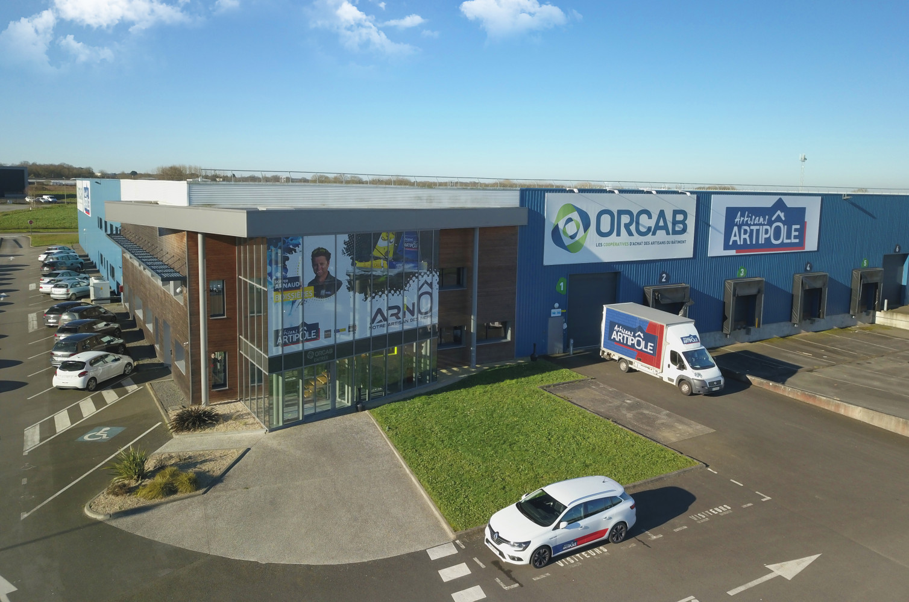

Stage chez Orcab Artisans Artipole
Courte présentation de l'entreprise :
À l’occasion de ma première année de BTS SIO, j’ai pu effectuer mon premier stage. J’ai été accueillie par la coopérative ORCAB – Artisans Artipôle à Rocheservière. Pendant cette période, j’ai été accompagnée par Richard Quentin, mon tuteur. Le stage s’est déroulé sur 6 semaines du 13 mai au 21 juin 2024.
L’entreprise ORCAB a été créée en 1990 et est installée depuis 2006 à Rocheservière. Elle regroupe environ 100 salariés et réalise un chiffre d’affaires de plus de 102 millions d’euros. Elle est spécialisée dans le commerce de gros et la distribution de produits de qualité à plus de 680 fournisseurs.
1 - Contexte du stage
Le stage s'est très bien déroulé. Accueillante et bienveillante, dès mon arrivée, j'ai été présentée au projet par Richard. L’objectif était de créer une application pour vérifier les URLs des logos présents sur le site GestionDataSite.
2 - Tâches réalisées
Mon stage s’est déroulé au sein du pôle développement, principalement en C#. L’application contient des informations confidentielles.
- Comprendre le C#
- S’approprier la base de données
3 - Mode console
J’ai commencé par le mode console : affichage des URLs et des codes erreurs des images.
Lien vers Mode console4 - Mode WinForms
Reproduction du même programme avec des Forms Windows.
Lien vers Mode WinForms5 - Technologies utilisées
Durant ce stage, j’ai utilisé .NET, C#, WebClient et des threads.

Compétences Tableau de Compétences :
Développer la présence en ligne de l’organisation
- J'ai participé à l'évolution du site en localisant les images cassées (Participer à l’évolution d’un site Web exploitant les données de l’organisation)
Organiser son développement professionnel
- Aller sur les docs Microsoft (Mettre en oeuvre des outils et stratégies de veille informationnelle)
- J'ai pu changer d'avis sur ce que je voulais faire (Gérer son identité professionne)
Conclusion
Ce stage m’a permis de découvrir un nouveau langage et d’élargir mes compétences informatiques. J’ai appris à gérer un projet de A à Z.

{kind=link}